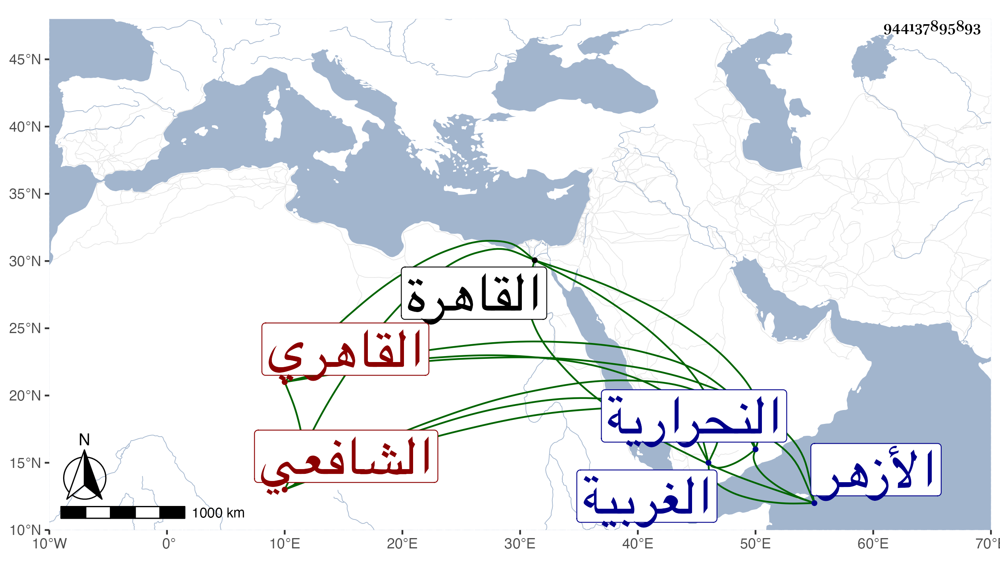

0902Sakhawi.DawLamic.ITO20230111-ara1.EIS1600.944137895893
Biography ID: 944137895893
526
محمد بن علي بن عمر البسيوني ثم القاهري الشافعي . ولد ببسيون من الغربية بالقرب من النحرارية سنة سبع وثلاثين وثمانمائة ونشأ بها وقرأ قليلا وتزوج ثم تحول إلى القاهرة فسكن قريبا من الأزهر وأكمل القرآن وحضر عند الشهاب العبادي وابن الصيرفي وعمر الدهتوري وقرأ على الشرنقاشي في المنهاج والحاوي ولازم الديمي حتى قرأ عليه الشفا والعمدة وثلث البخاري وغير ذلك ثم قرأ علي في البخاري جملة وسمع مني المسلسل . وهو من المنزلين بتربة الأشرف قايتباي .
